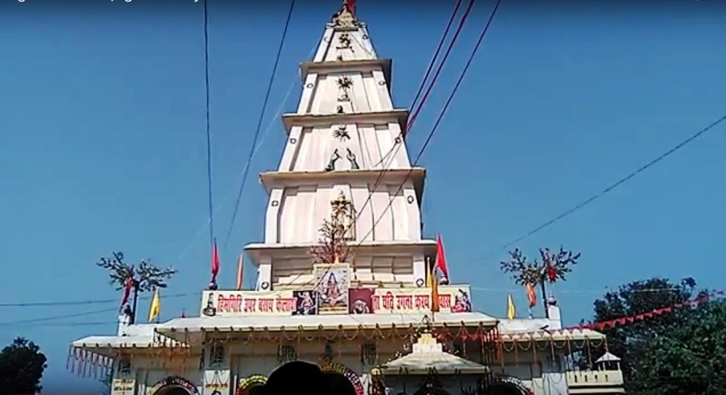
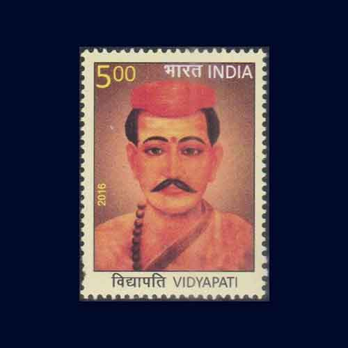
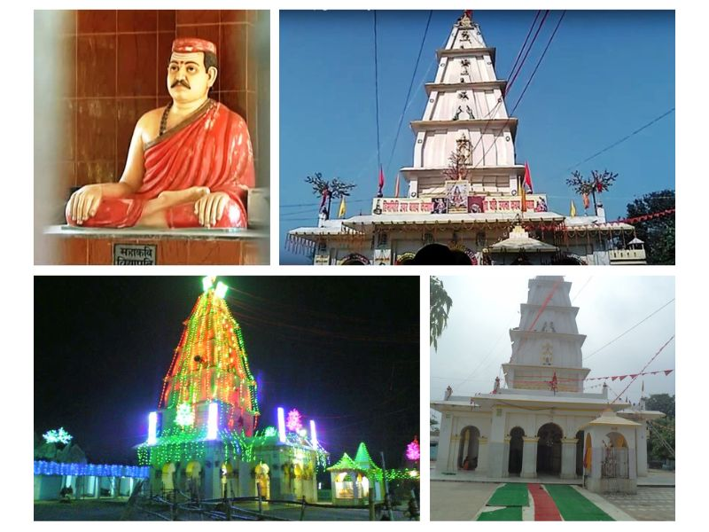

<!DOCTYPE html>
<html lang="en">
<head>
    <meta charset="UTF-8">
    <meta http-equiv="X-UA-Compatible" content="IE=edge">
    <meta name="viewport" content="width=device-width">
    <title>Document</title>
    <script>
        function getPics() {} //just for this demo
        const imgs = document.querySelectorAll('.gallery');
        const fullPage = document.querySelector('#fullpage');
        
        imgs.forEach(img => {
          img.addEventListener('click', function() {
            fullPage.style.backgroundImage = 'url(' + img.src + ')';
            fullPage.style.display = 'block';
          });
        });

        $('img[eng]').addClass('eng').click(function(){
    var src = $(this).attr('src');
    $('<div>').css({
        background: 'RGBA(0,0,0,.5) url('+src+') no-repeat center',
        backgroundSize: 'contain',
        width:'100%', height:'100%',
        position:'fixed',
        zIndex:'10000',
        top:'0', left:'0',
        cursor: 'zoom-out'
    }).click(function(){
        $(this).remove();
    }).appendTo('body');
});
        </script>
</head>
<body>
    
</body>
</html>
<style>
    *{
        margin: 9px 9px;
    }

   /* Add a black background color to the top navigation bar */
.topnav {
  overflow: hidden;
  background-color: #e9e9e9;
}

/* Style the links inside the navigation bar */
.topnav a {
  float: right;
  display: block;
  color: black;
  text-align: center;
  padding: 14px 16px;
  text-decoration: none;
  font-size: 17px;
}

/* Change the color of links on hover */
.topnav a:hover {
  background-color: #ddd;
  color: black;
}

/* Style the "active" element to highlight the current page */
.topnav a.active {
  background-color: #2196F3;
  color: white;
}

/* Style the search box inside the navigation bar */
.topnav input[type=text] {
  float: right;
  padding: 6px;
  border: none;
  margin-top: 20px;
  margin-right: 16px;
  font-size: 17px;
}

/* When the screen is less than 600px wide, stack the links and the search field vertically instead of horizontally */
@media screen and (max-width: 600px) {
  .topnav a, .topnav input[type=text] {
    float: none;
    display: block;
    text-align: left;
    width: 100%;
    margin: 0;
    padding: 14px;
  }
  .topnav input[type=text] {
    border: 1px solid #ccc;
    
  }
}


#fullpage {
  display: none;
  position: absolute;
  z-index: 9999;
  top: 0;
  left: 0;
  width: 100vw;
  height: 100vh;
  background-size: contain;
  background-repeat: no-repeat no-repeat;
  background-position: center center;
  background-color: black;
}


.headline{
    height: 100px;
    width: 100%;
    font-size: 25px;
}
.image{
    height: 500px;
    width: 100%;
    border: 2px white;
    border-radius: 8px;
    
}

nav {
    text-align: center;
    background-color: rgb(187, 186, 186);
    color: black;
  position: relative;
  padding-bottom: 12px;
}
nav.line {
  height: 2px;
  position: absolute;
  bottom: 0;
  margin: 10px 0 0 0;
  background: #d10d34;
}
nav ul {
    
  padding: 5px;
  margin: 5px;
  list-style: none;
  display: flex;
}
nav ul li {
  margin: 0 40px 0 0;
  opacity: 1;
  transition: all 0.4s ease;
}
nav ul li:hover {
    color: #d10d34;
  opacity: 2;
}
nav ul li.active {
  opacity: 2;
}
nav ul li:last-child {
  margin-right: 0;
}
nav ul li a {
  text-decoration: none;
  color: #000000;
  text-transform: uppercase;
  display: block;
  font-weight: 600;
  letter-spacing: 0.2em;
  font-size: 14px;
}


.image ul {
    align-content: baseline;
    
}

.container{
    display: flex;
}
.data{
    overflow: auto;
    height: 400px;
    width: 800px;
    font-size: large;
    /* border: 2px solid black;
    border-radius: 8px; */
}
/* .gallary{
    height: 400px;
    width: 660px;
    border: 2px solid black;
    border-radius: 8px;
} */
.photo1{
    height: 400px;
    width: 60%;
    /* border: 2px solid black;
    border-radius: 8px; */
    float: right; 
}
/* .short{
    position: absolute;
    top: 1500px;
    height: 400px;
    width: 26%;
    border: 2px solid black;
    border-radius: 8px;

} */
.bg{
    bottom: 0px;
    height: 50px;
    width: 100%;
}

.short1{
    position: absolute;
    /* top: 1500px; */
    /* left: 420px; */
    height: 500px;
    width: 36%;
    border: 2px solid black;
    border-radius: 8px;

}
</style>
<body>
    <nav>
        <ul>
          <li class="active"><a href="\index.html">Home</a></li>
          <li><a href="">About</a></li>
          <li><a href="">Contact Us</a></li>
        </ul>
    </nav>
    <div class="address">
        <br>
       <h3>Home/Pilgrimage/Ugna Mahadev Mandir</h3> 
    </div>
    <br>
    <div class="headline">
        <h1>Ugna Mahadev Mandir</h1>
    </div>
    <div class="image">
        
    </div>
    <br><br><br><br><br><br>
    <div class="container"> 
    <div class="data">
        <p>You must have heard of dasavatar of Lord Vishnu but have you heard of a avatar of Shiva who was a servant to a maithili poet from a small village of Bihar?

            We are discussing about Ugna Mahadev. Ugna Mahadev Mandir is a Hindu temple in Bhawanipur, Madhubani district in the Indian state of Bihar. 
            The temple is located 14 km from Madhubani and 180 km away from Patna. <br><br>
            It is thought that this place is where Lord Shiva showed his original being to Mahakavi Vidyapati.
             Ugna was incarnation of Lord Shiva as a servant of his favorite devotee and great Maithili poet Vidyapati.
            <br><br>
            
            It is said that Lord Shiva became so influenced by the devotion of Vidyapati that he used to live with Vidyapati as a servant. 
            According to the story of Lokmanas, Lord Shiva turned his disguise into a foolish bast and came to the Vidyapati and began to serve.
            <br><br>
            if you are the person who is interested in literature then you must visit this place and experience the amalgamation of maithili literature and infinite aura of Nataraj.</p>
    </div>
    <div class="gallary">
        
        <ul>
            <li>Distance From Bhagalpur: 200 Kms</li>
            <li>Via NH31</li>
        </ul>
        <div id="fullpage" onclick="this.style.display='none';"></div>
    </div>
        </div>
        
        <div class="photo1">
            <div<div class="mapouter"><div class="gmap_canvas"><iframe class="gmap_iframe" frameborder="0" scrolling="no" marginheight="0" marginwidth="0" src="https://maps.google.com/maps?width=600&amp;height=500&amp;hl=en&amp;q=ugna mahdev mandir bhawanipur&amp;t=&amp;z=14&amp;ie=UTF8&amp;iwloc=B&amp;output=embed"></iframe><a href="https://capcuttemplate.org/">Capcut Template</a></div><style>.mapouter{position:relative;text-align:right;width:600px;height:500px;}.gmap_canvas {overflow:hidden;background:none!important;width:100%;height:500px;}.gmap_iframe {width:100%!important;height:500px!important;}</style></div></div>
        </div>

       <div class="short1">
        
       </div>
       <br><br><br><br><br><br><br><br><br><br><br><br><br><br><br><br><br><br><br><br><br><br><br><br><br><br><br>
       <br><br><br><br><br>
</body>
</html>
